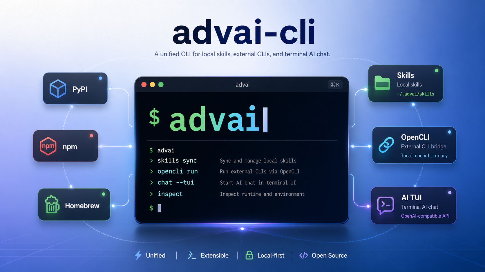

01
PyPI
For Python environments
pip install advai-cli
Local-first agent tooling
One command line for agent skills, browser automation, knowledge bases, external tools, and terminal AI chat.
$ advai info
Runtime ready · local state ~/.advai
$ advai skill list
design-taste-frontend synced
advai-browser installed
$ advai browser doctor
Browser bridge connected
$
01 / DISTRIBUTION
Three official channels. The same advai command.
For Python environments
pip install advai-cli
For macOS and Linux
brew install advai-cli
For Node.js toolchains
npm install -g advai-cli
PyPI provides the Python core. Homebrew packages it for system installation. The npm wrapper installs an isolated matching Python package.
02 / CAPABILITIES
Keep your tools, skills, and data close to the machine where the work happens.
Install, update, and sync skills across Codex, Claude Code, Cursor, and other agent platforms.
advai skill list
Drive authenticated browser sessions through a local extension-backed bridge.
advai browser doctor
Create, sync, and search local document collections without moving the source files elsewhere.
advai kb search
Discover and run supported external command-line tools through one consistent entrypoint.
advai cli list
Use an OpenAI-compatible backend from a terminal-native interface with local transcripts.
advai tui
03 / ONE ENTRYPOINT
Every distribution resolves to the same command surface and the same local-first runtime model.
Read the architecture ↗
04 / QUICK START
Verify the runtime, inspect your skills, check the browser bridge, then start the terminal interface.
Full documentation ↗advai infoadvai skill listadvai browser doctoradvai tui